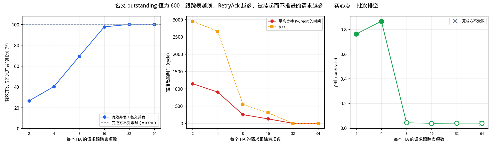
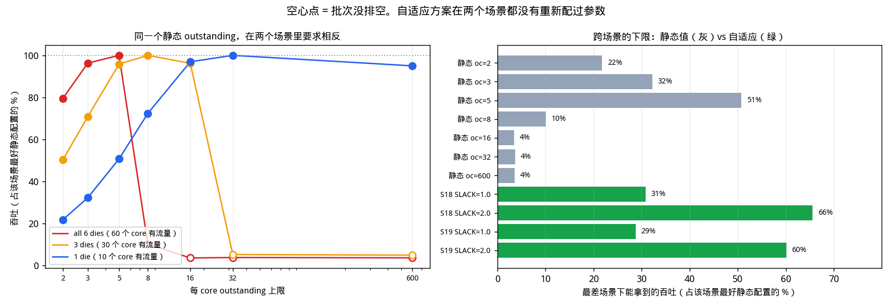

拓扑：6 个 top die（每个 20 节点、双平面、
双向 full ring：10 个 AI core + 8 个 D2D bridge + 2 个非终端节点）
+ 48 条 D2D 链路
+ 1 个 bottom die（96 个 HA，12 行 × 8 列；
6 条横向 + 8 条纵向单向 half ring）。
挂接点按 2 横 × 4 列 = 8 个一组挂到一个 top die；
每个 HA 与一个 D2D bridge 绑定。
workload：60 个 AI core 均匀写 96 个 HA，
每 core 50 笔 WriteNoSnp、每笔 4 个 WriteData
flit，共 3,000 笔事务；每 core outstanding 上限
600。
RetryAck
把请求退回发起方，再用 PCrdGrant 放行重发。
这条回路要真实带宽（2 个 RSP + 一次 REQ 重新过网）、
把请求打乱顺序，而且被挂起的事务仍然占着 outstanding 额度却毫无进展。
实测跟踪表深 2 时，
有效并发只剩名义值的 26.4%
（1109.7 → 293.4 笔），
平均挂起 1143.9 cycle。
反直觉的是这反而救了织物：深度 4 时批次
完整排空（Jain 0.9876），
而跟踪表不限时只完成
824/3,000。
原因是 RetryAck 本质上是一种非自愿的准入控制，
把吃不下的请求挡在织物外面。
所以正确的结论不是“retry 有害”，而是
这个织物必须有准入控制；用一个明确的窗口去做，
可以省下那段挂起延迟（§5.5）。rtt_min×(1+slack) 就涨窗口、越线就按比例回退、
收到 RetryAck 直接折半。
同一套参数不重配，窗口自己从
8.6（满载）走到
16.8（轻载），
跨场景下限提高到
65.5%。
代价是每 core 三个寄存器，没有广播总线、
没有新报文类型、不改完成方（§7.5）。
要如实说明：在已知不变的负载上，调对的静态值仍然更好
（S18 只到最好静态值的 85.7%），
S18 换来的是不掉悬崖、也不在轻载白扔带宽。| 项目 | 取值 | 说明 |
|---|---|---|
| top die 数量 | 6 | 每个是 20 节点、双平面、双向 full ring |
| 每 die 节点角色 | 10 core / 8 D2D bridge / 2 非终端 | 偶数号为 AI core；节点 9、19 既非 core 也非 HA，只转发 |
| AI core 总数 | 60 | 发起方 |
| HA 总数 | 96 | bottom die，12 行 × 8 列 |
| D2D 链路 | 48 | 每 die 8 条，双向，跨 SerDes |
| 挂接点 | 48 | 按“2 横 × 4 列 = 8 个”一组，共 6 组挂 6 个 top die |
| bottom die NoC | 6 横 + 8 纵 half ring | half ring = 单向闭环，仍然回绕，但只走一个方向 |
| 纵环长度 | 18 | 12 个 HA + 6 个挂接点交替排列 |
| 有向链路总数 | 768 | top 480 / D2D 96 / 横 48 / 纵 144 |
| CHI 虚通道 | req / rsp / dat | REQ、RSP、DAT 各自独占链路带宽，互不阻塞 |
| 每笔写的 flit 数 | REQ 1、RSP 2、DAT 4 | WriteNoSnp 四段握手：REQ → DBIDResp → WriteData → Comp |
| 每 core outstanding | 600 | 本次按要求设定；下文会说明它在这个织物上意味着什么 |
| 转向 / D2D FIFO 深度 | 64 / 128 | 唯一允许缓冲的地方；链路本身严格无缓冲 |
| workload | 每 core 50 笔，均匀写全部 96 个 HA | 需求完全对称，任何不均衡都是织物造成的 |
| 链路 | 延迟 | 说明 |
|---|---|---|
| top die 环内链路 | 1 / 2 / 3 / 4 cycle | 共 20 段，按位置不同；两个平面各一份 |
| D2D 跨 die | 4 cycle | SerDes + 跨时钟域，是全网最贵的一跳 |
| bottom die 环内跳 | 1 cycle | 规则阵列，短线 |
| 挂接点内转向 | 1 cycle | 横环 → 纵环，经转向 FIFO |
48 个挂接点分成 6 组、每组 8 个，形状是 2 个挂接行 × 4 列。 每个行间隙有 2 个挂接行 × 8 列 = 16 个挂接点，正好是 2 组，按左右半区切开：
| top die | 所在行间隙 | 挂接列 | 近/远横环 | 本列直落的 bridge | 需换列的 bridge | 换列距离 |
|---|---|---|---|---|---|---|
| top die 0 | 间隙 0 | 0–3 | H1 / H0 | 4 | 4 | 4 跳 |
| top die 1 | 间隙 0 | 4–7 | H0 / H1 | 4 | 4 | 4 跳 |
| top die 2 | 间隙 1 | 0–3 | H3 / H2 | 4 | 4 | 4 跳 |
| top die 3 | 间隙 1 | 4–7 | H2 / H3 | 4 | 4 | 4 跳 |
| top die 4 | 间隙 2 | 0–3 | H5 / H4 | 4 | 4 | 4 跳 |
| top die 5 | 间隙 2 | 4–7 | H4 / H5 | 4 | 4 | 4 跳 |

每个 HA 与一个 D2D bridge 绑定：先确定去哪个 HA，就确定了走哪个 bridge。一个 die 有 8 个 bridge、要覆盖 96 个 HA， 所以每个 bridge 独占一整列的 12 个 HA。 由于挂接组只落在 4 列上，其中 4 个 bridge 是“本列直落”， 另外 4 个必须先在横环上换列：

用哪个 bridge 不需要查表，是一条布线规则： 一个 die 的 8 个 bridge 落在自己那 4 列上、每列两次 （近端横环一次、远端横环一次）。 去本半区的列走近端横环那一个，去另一半区的列走远端横环那一个， 而组内的位置都等于目标列 mod 4。 以 die 0（拥有第 0~3 列）为例，它去右半区第 4~7 列时， 分别取组内第 0 / 1 / 2 / 3 个 bridge：
| 目标 HA 所在列 | 位置 | 用的 D2D bridge 节点号 | 该 bridge 在 8 个中的序号 | 组内位置 | 目标列 mod 4 | 落到哪条横环 | 符合 mod-4 规则 |
|---|---|---|---|---|---|---|---|
| 0 | 本 die 的 4 列 | 1 | 0 | 0 | 0 | 近端横环 H1 | 完成 |
| 1 | 本 die 的 4 列 | 3 | 1 | 1 | 1 | 近端横环 H1 | 完成 |
| 2 | 本 die 的 4 列 | 5 | 2 | 2 | 2 | 近端横环 H1 | 完成 |
| 3 | 本 die 的 4 列 | 7 | 3 | 3 | 3 | 近端横环 H1 | 完成 |
| 4 | 另一半的 4 列 | 11 | 4 | 0 | 0 | 远端横环 H0 | 完成 |
| 5 | 另一半的 4 列 | 13 | 5 | 1 | 1 | 远端横环 H0 | 完成 |
| 6 | 另一半的 4 列 | 15 | 6 | 2 | 2 | 远端横环 H0 | 完成 |
| 7 | 另一半的 4 列 | 17 | 7 | 3 | 3 | 远端横环 H0 | 完成 |
全部 48 个 (die, 列) 组合都满足这条 mod-4 规则 （完成），6 个 die 无一例外。
J = (Σxi)² / (n · Σxi²)
取值范围 1/n ~ 1。全部相等时 J = 1； 只有 k 个 core 拿到带宽、其余为 0 时 J = k/n。 它的好处是与量纲和总量无关——把所有带宽同乘一个系数，J 不变， 所以可以直接比较不同吞吐下的公平性。下界回答的是“无论调度多聪明，这批事务至少要多少 cycle”。 四个来源分别对应四种资源，取最大者：
| 下界来源 | cycle | 含义 |
|---|---|---|
| 链路下界（分 VC 取最大） | 2,112 | 最忙的一条有向链路上、单个 VC 需要搬运的 flit 数 |
| └ 分 VC 明细 | dat 2,112 / req 528 / rsp 1,222 | DAT 是 4 flit/笔，通常是它决定链路下界 |
| 端口下界 | 250 | 某个站点注入或弹出端口的总需求（各 VC 合并，端口只有一个） |
| └ 分织物明细 | d2d 219 / h 871 / top 218 / v 1,308 | 纵环 144 条、横环 48 条，横环少但只承担换列流量 |
| 织物切割下界 | 1,308 | 某类织物的总 flit·跳 ÷ 该类链路数 |
| 单事务时延下界 | 191 | 一笔写的四段握手串行时延，与并发无关 |
| 综合下界 | 2,112 | 以上四者取最大 |
| 路由策略 | 下界(cycle) | 上限 txn/cycle | 平均正向跳数 | 每笔 DAT 的纵/横 flit·跳 | 最忙纵向链路 / 平均 |
|---|---|---|---|---|---|
| 目的地绑定路由（硬件规定） | 2,112 | 1.4205 | 16.87 | 35.66 / 7.96 | 2.84× |
| 自由最短路径（按时延，不可实现） | 3,360 | 0.8929 | 13.59 | 35.54 / 10.0 | 4.54× |
| 自由最短路径（按跳数，不可实现） | 2,528 | 1.1867 | 13.22 | 35.43 / 7.34 | 3.42× |

| 方案 | 批次是否排空 | 完成事务 | makespan | 达下界比例 | Jain | max/min | CoV | 偏转次数 |
|---|---|---|---|---|---|---|---|---|
| S0 基线（无流控） | 拥塞崩溃 | 824 / 3,000 | 6,866 | 30.8% | 0.90943 | 4.71 | 0.3156 | 75,916 |
| S1 拥塞等级 AIMD | 拥塞崩溃 | 796 / 3,000 | 6,922 | 30.5% | 0.93339 | 4.29 | 0.2671 | 75,032 |
| S16 接收端授权（Homa 式） | 拥塞崩溃 | 824 / 3,000 | 6,866 | 30.8% | 0.90943 | 4.71 | 0.3156 | 75,916 |
| S17 挂接点转向仲裁（本文提出） | 拥塞崩溃 | 885 / 3,000 | 8,032 | 26.3% | 0.91854 | 4.14 | 0.2978 | 96,282 |
一个 core 只提交 50 笔写，所以在这个批次里 “在途上限 600”其实永远碰不到—— 上限高于批量时，它和“无上限”是同一件事。 下面把批量逐步加大，看实测在途峰值和结论是否改变：
| 每 core 批量 k | 实测在途峰值 | 上限是否真正生效 | 批次是否排空 | 完成事务 | txn/cycle |
|---|---|---|---|---|---|
| 50（3,000 笔） | 50 | 否 | 拥塞崩溃 | 824 / 3,000 | 0.040 |
| 100（6,000 笔） | 100 | 否 | 拥塞崩溃 | 1,507 / 6,000 | 0.071 |
| 200（12,000 笔） | 200 | 否 | 拥塞崩溃 | 3,006 / 12,000 | 0.133 |
路由被绑定钉死、FIFO 深度不是瓶颈（§5.3）， 所以设计上真正能动的只剩一个数：每 core 的 outstanding 上限。 先看单种子的全景扫描：

| outstanding | 批次是否排空 | makespan | txn/cycle | 达下界比例 | Jain | max/min | 偏转次数 |
|---|---|---|---|---|---|---|---|
| 2 | 完成 | 3,396 | 0.883 | 62.2% | 0.99862 | 1.16 | 1,215 |
| 3 | 完成 | 2,804 | 1.070 | 75.3% | 0.99521 | 1.32 | 1,528 |
| 4 | 完成 | 2,866 | 1.047 | 73.7% | 0.99046 | 1.61 | 2,537 |
| 5 ← 推荐 | 完成 | 2,700 | 1.111 | 78.2% | 0.98276 | 1.79 | 4,030 |
| 6 | 完成 | 2,727 | 1.100 | 77.5% | 0.98441 | 1.89 | 5,064 |
| 8 | 拥塞崩溃 | 8,219 | 0.301 | 25.7% | 0.98833 | 1.63 | 46,139 |
| 16 | 拥塞崩溃 | 7,179 | 0.115 | 29.4% | 0.97233 | 2.57 | 92,079 |
| 32 | 拥塞崩溃 | 6,984 | 0.123 | 30.2% | 0.97249 | 2.70 | 67,460 |
| 128 | 拥塞崩溃 | 6,866 | 0.120 | 30.8% | 0.90943 | 4.71 | 75,916 |
| 600 ← 题目规定 | 拥塞崩溃 | 6,866 | 0.120 | 30.8% | 0.90943 | 4.71 | 75,916 |

| outstanding | 排空的种子数 | txn/cycle | 达下界比例 | Jain 均值 | Jain 最差 | max/min 最差 | 是否满足公平线 |
|---|---|---|---|---|---|---|---|
| 2 ← 推荐 | 3 / 3 | 0.881 | 62.2% | 0.99866 | 0.99862 | 1.19 | 达标 |
| 3 | 3 / 3 | 1.049 | 74.1% | 0.99373 | 0.99179 | 1.52 | 未达标 |
| 4 | 3 / 3 | 1.047 | 74.0% | 0.98313 | 0.97686 | 2.08 | 未达标 |
| 5 | 3 / 3 | 1.087 | 76.8% | 0.97796 | 0.97159 | 2.08 | 未达标 |
| 6 | 2 / 3 | 1.094 | 78.4% | 0.97659 | 0.96997 | 2.65 | 未达标 |
| 7 | 2 / 3 | 1.101 | 79.0% | 0.97466 | 0.96845 | 2.51 | 未达标 |
| 8 | 1 / 3 | 1.153 | 79.0% | 0.97942 | 0.96909 | 2.36 | 未达标 |
| 方案 | 排空的种子数 | Jain 均值 | Jain 最差 | max/min 最差 | 达下界比例最差 |
|---|---|---|---|---|---|
| S0 基线（无流控） | 3 / 3 | 0.97796 | 0.97159 | 2.08 | 74.1% |
| S1 拥塞等级 AIMD | 3 / 3 | 0.97796 | 0.97159 | 2.08 | 74.1% |
| S16 接收端授权（Homa 式） | 3 / 3 | 0.97796 | 0.97159 | 2.08 | 74.1% |
| S17 挂接点转向仲裁（本文提出） | 3 / 3 | 0.98176 | 0.97702 | 2.27 | 74.8% |
上表在 outstanding=5 上跑。 S0、S1、S16 三行完全一样——这不是笔误： 并发度已经压到织物的舒适区之后， S1 的 AIMD 和 S16 的授权预算都从不触发， 它们的硬件在这个工作点上是纯粹的死重。

| 横环分配 | outstanding | 下界 | 批次是否排空 | txn/cycle | Jain | max/min | 各 die 进入列 0 的位置 |
|---|---|---|---|---|---|---|---|
| split | 2 | 2,112 | 完成 | 0.883 | 0.99862 | 1.16 | d0→v2,d1→v2,d2→v9,d3→v9,d4→v16,d5→v16 |
| split | 5 | 2,112 | 完成 | 1.111 | 0.98276 | 1.79 | d0→v2,d1→v2,d2→v9,d3→v9,d4→v16,d5→v16 |
| split | 32 | 2,112 | 拥塞崩溃 | 0.123 | 0.97249 | 2.70 | d0→v2,d1→v2,d2→v9,d3→v9,d4→v16,d5→v16 |
| split | 600 | 2,112 | 拥塞崩溃 | 0.120 | 0.90943 | 4.71 | d0→v2,d1→v2,d2→v9,d3→v9,d4→v16,d5→v16 |
| stack | 2 | 2,112 | 完成 | 0.857 | 0.99865 | 1.22 | d0→v1,d1→v2,d2→v8,d3→v9,d4→v15,d5→v16 |
| stack | 5 | 2,112 | 完成 | 1.068 | 0.97926 | 2.00 | d0→v1,d1→v2,d2→v8,d3→v9,d4→v15,d5→v16 |
| stack | 32 | 2,112 | 拥塞崩溃 | 0.188 | 0.95973 | 4.12 | d0→v1,d1→v2,d2→v8,d3→v9,d4→v15,d5→v16 |
| stack | 600 | 2,112 | 拥塞崩溃 | 0.146 | 0.92638 | 3.88 | d0→v1,d1→v2,d2→v8,d3→v9,d4→v15,d5→v16 |
转向 FIFO 是这个织物唯一允许缓冲的地方，深度直接是面积代价。 单种子扫描（在 outstanding=5 下）：
| 转向 / D2D FIFO 深度 | 批次是否排空 | makespan | txn/cycle | Jain | 转向 FIFO 峰值占用 | 偏转次数 |
|---|---|---|---|---|---|---|
| 4 / 8 | 拥塞崩溃 | 6,602 | 0.025 | 0.62404 | 4 | 60,510 |
| 16 / 32 | 拥塞崩溃 | 6,754 | 0.038 | 0.84761 | 16 | 67,533 |
| 64 / 128 | 完成 | 2,700 | 1.111 | 0.98276 | 64 | 4,030 |
| 128 / 256 | 完成 | 2,815 | 1.066 | 0.98413 | 128 | 1,731 |
再跨 3 个种子把深度和并发度一起扫， 得到真正可用的深度需求：
| outstanding | 转向 / D2D 深度 | 排空的种子数 | txn/cycle | Jain 均值 | 转向 FIFO 峰值占用 |
|---|---|---|---|---|---|
| 2 | 8 / 16 ← 该并发度的最小可用深度 | 3 / 3 | 0.872 | 0.99863 | 8 |
| 2 | 16 / 32 | 3 / 3 | 0.881 | 0.99872 | 16 |
| 2 | 24 / 48 | 3 / 3 | 0.876 | 0.9987 | 24 |
| 2 | 32 / 64 | 3 / 3 | 0.881 | 0.99867 | 32 |
| 2 | 48 / 96 | 3 / 3 | 0.881 | 0.99866 | 34 |
| 2 | 64 / 128 | 3 / 3 | 0.881 | 0.99866 | 34 |
| 3 | 8 / 16 | 0 / 3 | — | 0.82396 | 8 |
| 3 | 16 / 32 | 2 / 3 | 1.029 | 0.99414 | 16 |
| 3 | 24 / 48 ← 该并发度的最小可用深度 | 3 / 3 | 1.043 | 0.99453 | 24 |
| 3 | 32 / 64 | 3 / 3 | 1.051 | 0.99379 | 32 |
| 3 | 48 / 96 | 3 / 3 | 1.067 | 0.99372 | 48 |
| 3 | 64 / 128 | 3 / 3 | 1.049 | 0.99373 | 64 |
| 5 | 8 / 16 | 0 / 3 | — | 0.7735 | 8 |
| 5 | 16 / 32 | 0 / 3 | — | 0.83438 | 16 |
| 5 | 24 / 48 | 0 / 3 | — | 0.91665 | 24 |
| 5 | 32 / 64 | 0 / 3 | — | 0.9761 | 32 |
| 5 | 48 / 96 | 2 / 3 | 1.094 | 0.97786 | 48 |
| 5 | 64 / 128 ← 该并发度的最小可用深度 | 3 / 3 | 1.087 | 0.97796 | 64 |
前面把 outstanding 当成一个纯粹的注入闸门，但完成方也有自己的额度。
CHI 里 HA 的请求跟踪表满了之后不能把请求排队：
它必须回一个 RetryAck 把请求退回发起方，
之后再用 PCrdGrant 发一个协议信用，
发起方收到信用才能重发这笔请求。
这条回路有三个后果，本节把它们分开测量：

| HA 跟踪表深度 | 排空 | 完成事务 | 吞吐 txn/cycle | RetryAck 次数 | 每笔 retry | 名义并发 | 有效并发 | 有效/名义 | 挂起 均值 | 挂起 p99 | Jain （按 core） | Jain （按 die） |
|---|---|---|---|---|---|---|---|---|---|---|---|---|
| 64 | 拥塞崩溃 | 824/3,000 | 0.040 | 0 | 0.000 | 2190.6 | 2190.6 | 100.0% | 0 | 0 | 0.9094 | 0.9762 |
| 32 | 拥塞崩溃 | 824/3,000 | 0.040 | 0 | 0.000 | 2190.6 | 2190.6 | 100.0% | 0 | 0 | 0.9094 | 0.9762 |
| 16 | 拥塞崩溃 | 789/3,000 | 0.038 | 166 | 0.210 | 2224.1 | 2172.0 | 97.7% | 129.3 | 304 | 0.9040 | 0.9747 |
| 8 | 拥塞崩溃 | 892/3,000 | 0.043 | 1,323 | 1.483 | 2122.6 | 1465.6 | 69.0% | 251.3 | 549 | 0.8843 | 0.9495 |
| 4 | 完成 | 3,000/3,000 | 0.866 | 2,616 | 0.872 | 1142.9 | 461.0 | 40.3% | 902.7 | 2657 | 0.9876 | 0.9915 |
| 2 | 完成 | 3,000/3,000 | 0.762 | 2,808 | 0.936 | 1109.7 | 293.4 | 26.4% | 1143.9 | 2950 | 0.9885 | 0.9926 |
| 不限 | 拥塞崩溃 | 824/3,000 | 0.040 | 0 | 0.000 | 2190.6 | 2190.6 | 100.0% | 0 | 0 | 0.9094 | 0.9762 |

| 结构变量 | Spearman(变量, 每核带宽) | 说明 |
|---|---|---|
| seat_max | -0.703 | 最强的单一预测变量：该 core 要并入的最忙那条纵向边上已有多少上游流量 |
| seat_pearson | -0.612 | 平均纵环边负载的线性相关程度 |
| seat | -0.597 | 平均（而非最忙）纵环边负载 |
| near_vpos | -0.386 | 本列直落的挂接点位置 |
| gap | -0.366 | 0/1/2，即纵环上的三段 |
| die | -0.314 | 计划里的假设。数值很小，说明不是按 die 编号排序 |
| far_vpos | -0.314 | 换列后进入的挂接点位置 |
| h_hops | -0.217 | 每个 core 都是一半近一半远，本来就没有区分度 |
| half | 0.123 | 左半区(0) 还是右半区(1) |
| top_idx | 0.032 | core 在 top 环上的序号；top 环容量过剩，影响最小 |
| top die | 行间隙 | 挂接列 | 近/远横环 | 近/远注入 vpos | 平均纵环边负载 | core 数 | 带宽均值 | 最小 | 最大 |
|---|---|---|---|---|---|---|---|---|---|
| top die 0 | 0 | 左 0–3 | H1 / H0 | v2 / v1 | 1664.8 | 10 | 0.09136 | 0.08521 | 0.09738 |
| top die 1 | 0 | 右 4–7 | H0 / H1 | v1 / v2 | 1435.2 | 10 | 0.09617 | 0.08764 | 0.10956 |
| top die 2 | 1 | 左 0–3 | H3 / H2 | v9 / v8 | 1590.4 | 10 | 0.09957 | 0.08034 | 0.12173 |
| top die 3 | 1 | 右 4–7 | H2 / H3 | v8 / v9 | 1410.5 | 10 | 0.10657 | 0.09982 | 0.11929 |
| top die 4 | 2 | 左 0–3 | H5 / H4 | v16 / v15 | 1609.3 | 10 | 0.08424 | 0.06817 | 0.09982 |
| top die 5 | 2 | 右 4–7 | H4 / H5 | v15 / v16 | 1632.3 | 10 | 0.07931 | 0.0706 | 0.09738 |
最好的 die 3（0.10657）与最差的 die 5（0.07931）相差 1.34 倍。 注意“平均纵环边负载”这一列并不与带宽单调对应， 正是上面那段说的反例。
按 core 统计回答的是“有没有哪一个核被饿死”。 但一个 core 不是可调度的单位，一个 top die 才是： 它的 10 个 AI core 共用同一个 die 的环、同一个 8 个挂接点的组、 同一套 8 个 D2D bridge。如果一个 die 的带宽不够， 在这个 die 内部再怎么调度也补不回来。 所以下表把每个 top die 的 10 个 core 合成一组：

| outstanding | 方案 | 排空 | 各 die 写吞吐 (flit/cycle) die 0 / 1 / 2 / 3 / 4 / 5 | 合计 | die 间 max/min （按完成量） | die 间 Jain （竞争窗口） | die 间 max/min | die 间 CoV | 最差 die | Jain （按 core） | 最差 die 内部 的 Jain |
|---|---|---|---|---|---|---|---|---|---|---|---|
| 600 | S0 | 拥塞崩溃 | 0.001 / 0.048 / 0.010 / 0.047 / 0.001 / 0.051 | 0.158 | 88.33 | 0.9762 | 1.66 | 0.156 | die 4 | 0.9094 | 0.8606 |
| 600 | S1 | 拥塞崩溃 | 0.002 / 0.048 / 0.004 / 0.047 / 0.001 / 0.051 | 0.152 | 66.25 | 0.9934 | 1.31 | 0.082 | die 4 | 0.9334 | 0.8944 |
| 600 | S16 | 拥塞崩溃 | 0.001 / 0.048 / 0.010 / 0.047 / 0.001 / 0.051 | 0.158 | 88.33 | 0.9762 | 1.66 | 0.156 | die 4 | 0.9094 | 0.8606 |
| 600 | S17 | 拥塞崩溃 | 0.001 / 0.046 / 0.011 / 0.044 / 0.011 / 0.048 | 0.161 | 66.25 | 0.9788 | 1.66 | 0.147 | die 4 | 0.9185 | 0.8791 |
| 5 | S0 | 完成 | 0.741 / 0.741 / 0.741 / 0.741 / 0.741 / 0.741 | 4.444 | 1.00 | 0.9903 | 1.34 | 0.099 | die 5 | 0.9828 | 0.9863 |
| 5 | S1 | 完成 | 0.741 / 0.741 / 0.741 / 0.741 / 0.741 / 0.741 | 4.444 | 1.00 | 0.9903 | 1.34 | 0.099 | die 5 | 0.9828 | 0.9863 |
| 5 | S16 | 完成 | 0.741 / 0.741 / 0.741 / 0.741 / 0.741 / 0.741 | 4.444 | 1.00 | 0.9903 | 1.34 | 0.099 | die 5 | 0.9828 | 0.9863 |
| 5 | S17 | 完成 | 0.726 / 0.726 / 0.726 / 0.726 / 0.726 / 0.726 | 4.359 | 1.00 | 0.9936 | 1.28 | 0.080 | die 5 | 0.9882 | 0.9921 |
| 自适应 | S18 | 完成 | 0.635 / 0.635 / 0.635 / 0.635 / 0.635 / 0.635 | 3.810 | 1.00 | 0.9690 | 1.86 | 0.179 | die 5 | 0.8558 | 0.8533 |
| 自适应 | S19 | 完成 | 0.608 / 0.608 / 0.608 / 0.608 / 0.608 / 0.608 | 3.645 | 1.00 | 0.9814 | 1.48 | 0.138 | die 5 | 0.8223 | 0.7985 |
| 方案 | 批次是否排空 | 完成事务 | makespan | 达下界比例 | Jain | max/min | CoV | 偏转次数 |
|---|---|---|---|---|---|---|---|---|
| S0 基线（无流控） | 完成 | 3,000 / 3,000 | 2,700 | 78.2% | 0.98276 | 1.79 | 0.1325 | 4,030 |
| S1 拥塞等级 AIMD | 完成 | 3,000 / 3,000 | 2,700 | 78.2% | 0.98276 | 1.79 | 0.1325 | 4,030 |
| S16 接收端授权（Homa 式） | 完成 | 3,000 / 3,000 | 2,700 | 78.2% | 0.98276 | 1.79 | 0.1325 | 4,030 |
| S17 挂接点转向仲裁（本文提出） | 完成 | 3,000 / 3,000 | 2,753 | 76.7% | 0.98824 | 1.67 | 0.1091 | 4,065 |

每个节点统计本地拥塞等级，经专用旁路总线（不占 NoC）广播， 源端按 AIMD 调整注入速率。 实测它在 outstanding=5 下能跑， 跨种子 Jain 均值 0.97796、最差 max/min 2.08。 代价是要一条覆盖全芯片、跨 die 的广播网 （66,528 bit 广播总量），在 3D 堆叠里尤其贵。
思路是把 CHI 的 DBIDResp 直接当作 Homa 的 grant 用：
HA 按“最少服务优先”配额发放 DBIDResp，
用 overcommit 控制同时在飞的授权数。
好处是不新增报文类型，完全落在 CHI 语义内。
| overcommit | 批次是否排空 | makespan | Jain | max/min | 授权峰值 | HA 侧缓冲峰值(flit) | 授权等待均值 | 网络时延 p99 |
|---|---|---|---|---|---|---|---|---|
| 1 | 完成 | 3,558 | 0.85385 | 6.25 | 1 | 4 | 159.3 | 1379 |
| 2 | 完成 | 2,954 | 0.97916 | 2.17 | 2 | 8 | 114.9 | 938 |
| 4 | 完成 | 2,724 | 0.98612 | 1.72 | 4 | 16 | 74.3 | 725 |
| 8 | 完成 | 2,775 | 0.98401 | 1.72 | 8 | 32 | 33.6 | 710 |
| 16 | 完成 | 2,700 | 0.98276 | 1.79 | 10 | 40 | 0.0 | 702 |
| 64 | 完成 | 2,700 | 0.98276 | 1.79 | 10 | 40 | 0.0 | 702 |
既然瓶颈是并入仲裁，就直接改仲裁：
挂接点的转向 FIFO 连续被阻塞 turn_patience 拍之后，
获得一次对在环流量的优先权，用一个 1 flit 的闩实现。
这是唯一直接命中瓶颈机理的方案，也是最便宜的织物侧改动。
| turn_patience | 批次是否排空 | makespan | Jain | max/min | 转向让行次数 | 被闩住的 flit·cycle | 网络时延 p99 |
|---|---|---|---|---|---|---|---|
| 0（等于基线） | 完成 | 2,700 | 0.98276 | 1.79 | 0 | 0 | 702 |
| 1 | 完成 | 2,741 | 0.98753 | 1.72 | 13,764 | 1 | 738 |
| 2 | 完成 | 2,715 | 0.98803 | 1.67 | 9,835 | 1 | 718 |
| 4 | 完成 | 2,758 | 0.98458 | 1.85 | 6,088 | 1 | 661 |
| 8 | 完成 | 2,753 | 0.98824 | 1.67 | 2,876 | 1 | 708 |
| 16 | 完成 | 2,751 | 0.98671 | 1.82 | 892 | 1 | 690 |
到这里推荐值是一个静态数字（outstanding=2）， 它成立的前提是“负载形态不变”。这个前提要检验，因为 outstanding 有两个方向相反的失效模式： 配得太大，忙的时候拥塞崩溃； 配得太小，闲的时候盖不住往返时延，core 只能空等 Comp。 决定“静态值到底行不行”的，是这两个区间还有没有交集。 下面把有流量的 core 数从 60 降到 10（只有一个 top die 在写）， 其余一切不变：

| 场景 | 有流量的 core 数 | 配置 | 排空 | 吞吐 txn/cycle | 占该场景 最好静态值 | 实测收敛的 窗口范围 | Jain （按 core） | Jain （按 die） |
|---|---|---|---|---|---|---|---|---|
| all 6 dies | 60 | 静态 oc=2 | 完成 | 0.883 | 79.5% | — | 0.9986 | 0.9997 |
| all 6 dies | 60 | 静态 oc=3 | 完成 | 1.070 | 96.3% | — | 0.9952 | 0.9971 |
| all 6 dies | 60 | 静态 oc=5 | 完成 | 1.111 | 100.0% | — | 0.9828 | 0.9903 |
| all 6 dies | 60 | 静态 oc=8 | 拥塞崩溃 | 0.111 | 10.0% | — | 0.9883 | 0.9962 |
| all 6 dies | 60 | 静态 oc=16 | 拥塞崩溃 | 0.039 | 3.5% | — | 0.9723 | 0.9908 |
| all 6 dies | 60 | 静态 oc=32 | 拥塞崩溃 | 0.041 | 3.7% | — | 0.9725 | 0.9945 |
| all 6 dies | 60 | 静态 oc=600 | 拥塞崩溃 | 0.040 | 3.6% | — | 0.9094 | 0.9762 |
| all 6 dies | 60 | S18 slack=1.0 | 完成 | 0.740 | 66.6% | 2..21 | 0.8231 | 0.9728 |
| all 6 dies | 60 | S18 slack=2.0 | 完成 | 0.952 | 85.7% | 1..18 | 0.8558 | 0.9690 |
| all 6 dies | 60 | S19 slack=1.0 | 完成 | 0.797 | 71.7% | 1..18 | 0.8051 | 0.9857 |
| all 6 dies | 60 | S19 slack=2.0 | 完成 | 0.911 | 82.0% | 1..21 | 0.8223 | 0.9814 |
| 3 dies | 30 | 静态 oc=2 | 完成 | 0.479 | 50.3% | — | 0.9991 | 1.0000 |
| 3 dies | 30 | 静态 oc=3 | 完成 | 0.674 | 70.8% | — | 0.9988 | 0.9999 |
| 3 dies | 30 | 静态 oc=5 | 完成 | 0.913 | 95.9% | — | 0.9972 | 0.9987 |
| 3 dies | 30 | 静态 oc=8 | 完成 | 0.952 | 100.0% | — | 0.9814 | 0.9859 |
| 3 dies | 30 | 静态 oc=16 | 完成 | 0.916 | 96.2% | — | 0.9887 | 0.9914 |
| 3 dies | 30 | 静态 oc=32 | 拥塞崩溃 | 0.049 | 5.1% | — | 0.9881 | 0.9906 |
| 3 dies | 30 | 静态 oc=600 | 拥塞崩溃 | 0.046 | 4.8% | — | 0.9698 | 0.9724 |
| 3 dies | 30 | S18 slack=1.0 | 完成 | 0.564 | 59.2% | 2..18 | 0.9017 | 0.9922 |
| 3 dies | 30 | S18 slack=2.0 | 完成 | 0.677 | 71.1% | 4..18 | 0.9327 | 0.9970 |
| 3 dies | 30 | S19 slack=1.0 | 完成 | 0.540 | 56.7% | 2..17 | 0.9013 | 0.9900 |
| 3 dies | 30 | S19 slack=2.0 | 完成 | 0.688 | 72.3% | 4..36 | 0.9266 | 0.9861 |
| 1 die | 10 | 静态 oc=2 | 完成 | 0.163 | 21.7% | — | 0.9993 | 1.0000 |
| 1 die | 10 | 静态 oc=3 | 完成 | 0.242 | 32.2% | — | 0.9994 | 1.0000 |
| 1 die | 10 | 静态 oc=5 | 完成 | 0.381 | 50.7% | — | 0.9993 | 1.0000 |
| 1 die | 10 | 静态 oc=8 | 完成 | 0.544 | 72.4% | — | 0.9990 | 1.0000 |
| 1 die | 10 | 静态 oc=16 | 完成 | 0.729 | 96.9% | — | 0.9977 | 1.0000 |
| 1 die | 10 | 静态 oc=32 | 完成 | 0.752 | 100.0% | — | 0.9990 | 1.0000 |
| 1 die | 10 | 静态 oc=600 | 完成 | 0.714 | 95.0% | — | 0.9995 | 1.0000 |
| 1 die | 10 | S18 slack=1.0 | 完成 | 0.232 | 30.8% | 4..17 | 0.8898 | 1.0000 |
| 1 die | 10 | S18 slack=2.0 | 完成 | 0.493 | 65.5% | 10..32 | 0.9575 | 1.0000 |
| 1 die | 10 | S19 slack=1.0 | 完成 | 0.216 | 28.7% | 3..18 | 0.8860 | 1.0000 |
| 1 die | 10 | S19 slack=2.0 | 完成 | 0.452 | 60.1% | 9..38 | 0.9644 | 1.0000 |
既然要动态，就得先选一个反馈信号。RetryAck 看起来最现成， 但 §5.5 已经说明它来得太晚：这个织物的瓶颈在环上的并入仲裁， HA 的跟踪表在被压垮之前根本填不满， 所以只靠 RetryAck 的控制器会一路把窗口涨过悬崖。 真正能反映织物拥塞的免费信号是往返时延本身： 发起方本来就知道自己什么时候发出 REQ、什么时候收到 Comp。
S18 的控制环完全落在发起方本地：
rtt_min
就是这个 core 自己的“无拥塞基线”，
它同时也定义了窗口的下限——要盖住往返，窗口不能比
带宽时延积更小。rtt_min × (1 + slack)。
低于它说明织物还有余量，高于它说明这个 core 正在为自己制造排队。S18 修的是“流量总量”，S17 修的是“谁先走”，两者互不干涉， 可以直接叠加。这也刚好对上 §6.2： die 粒度的失衡来自挂接点的并入优先级， 而这正是 S17 的作用点。
| 方案 | 存储/逻辑代价 | 带宽代价 | 额外互连 | 运行时状态 | 评价 |
|---|---|---|---|---|---|
| S0 基线 | 0 | 0 | 无 | 无 | 已有 outstanding 计数器之外不加任何东西 |
| 把 outstanding 调到推荐值 | 0 | 0 | 无 | 无 | 改一个已有的配置寄存器；负载形态已知且不变时的首选 |
| S1 拥塞等级 AIMD | 264 个节点各 1 个拥塞等级寄存器 | 66,528 bit 广播总量 | 专用旁路总线（不占 NoC） | 每源平均 123.0 个受控节点 | 要一条覆盖全芯片的广播网，跨 die 还要过 D2D |
| S16 接收端授权 | 96 个 HA 各 1 套授权状态机 + 请求表 | HA 侧缓冲峰值 40 flit | 无额外网络 | 授权峰值 10 | 把 DBIDResp 当授权用，不新增报文类型 |
| S17 挂接点转向仲裁 | 48 个挂接点各 1 个饥饿计数器 + 1 flit 闩 | 0 | 无 | 纯本地，无通信 | 最便宜的织物侧改动，但见下文的实测结论 |
| S18 时延驱动的自适应窗口（本文推荐） | 60 个 core 各 3 个寄存器（窗口 / rtt_min / 累加器）+ 每个在途表项 1 个时间戳 | 0（复用已有的 Comp 时刻，不新增报文） | 无 | 纯本地，只看自己的往返时延 | 唯一能同时应对满载崩溃与轻载欠载的方案；不改完成方 |
| S19 = S18 + S17 | 上面两项之和 | 0 | 无 | 两处互不干涉 | 按 top die 粒度验收时代价最小的组合 |
python3 utils/dse_stack_write_fair.py --k 50
--seeds 0 1 2 --oc-work 5python3 utils/gen_stack_write_report.pypython3 utils/verify_stack.py（拓扑、守恒、方案不变量的回归检查）